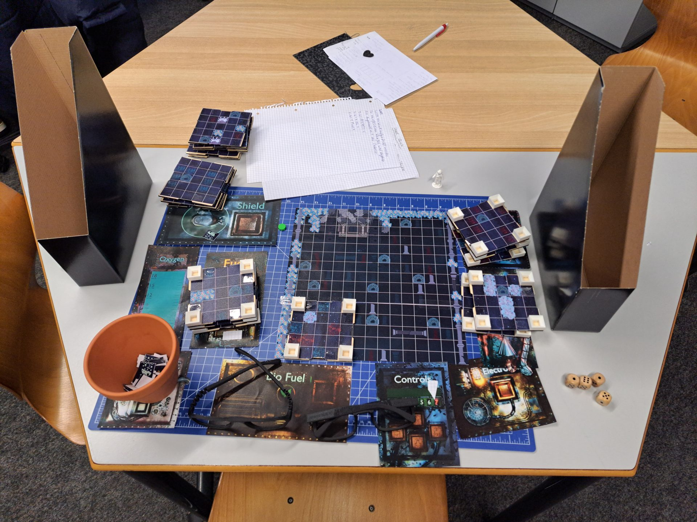
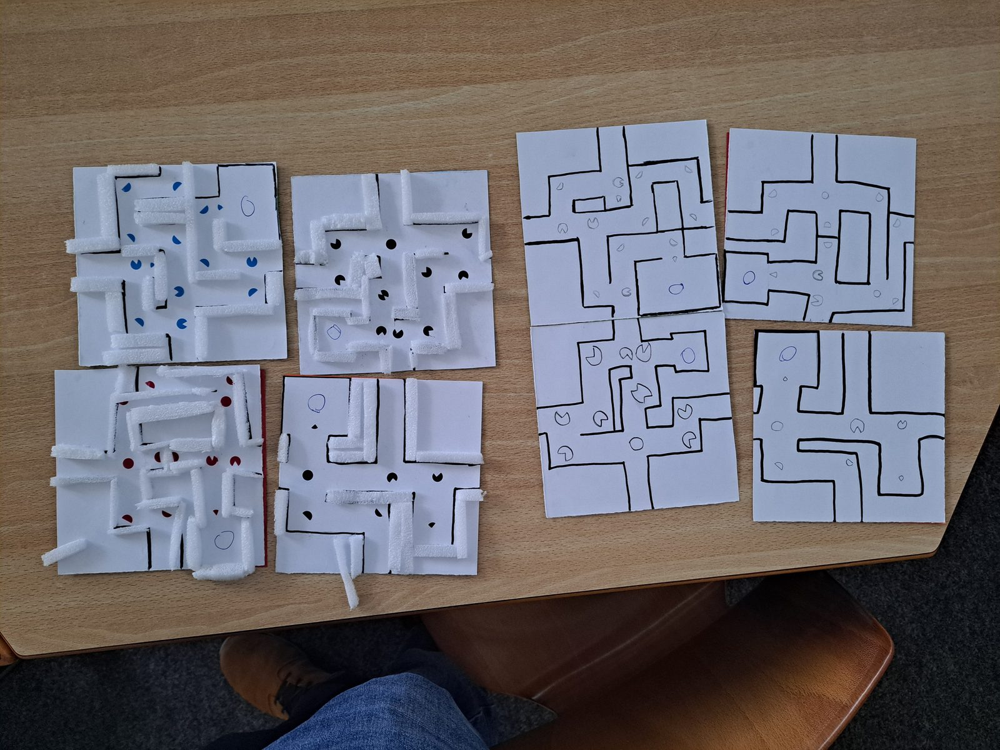
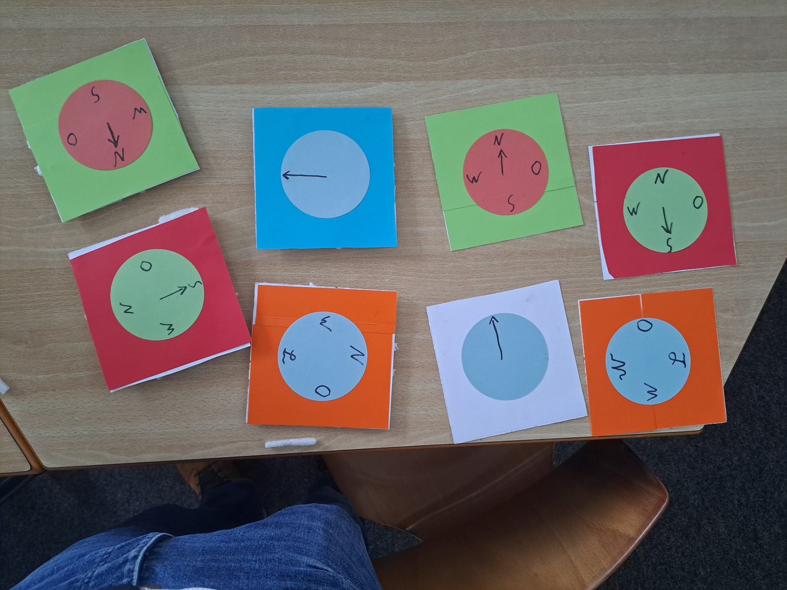
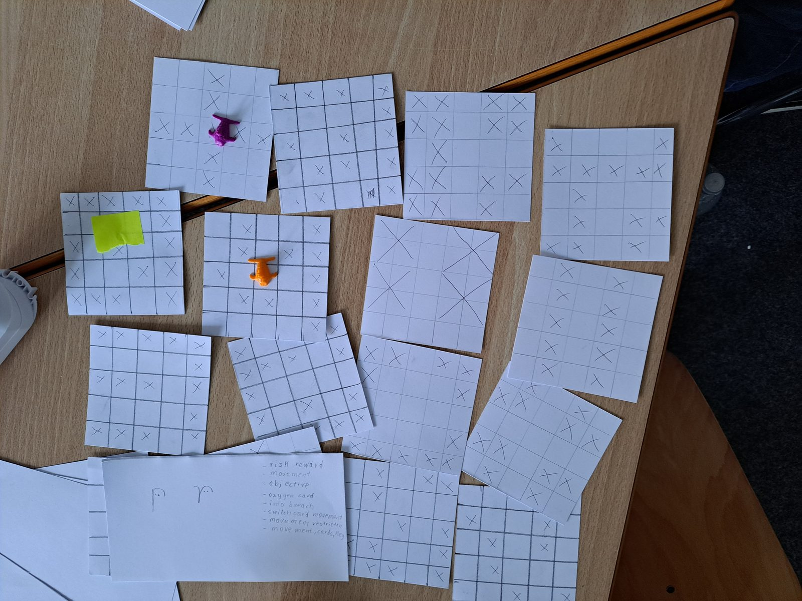
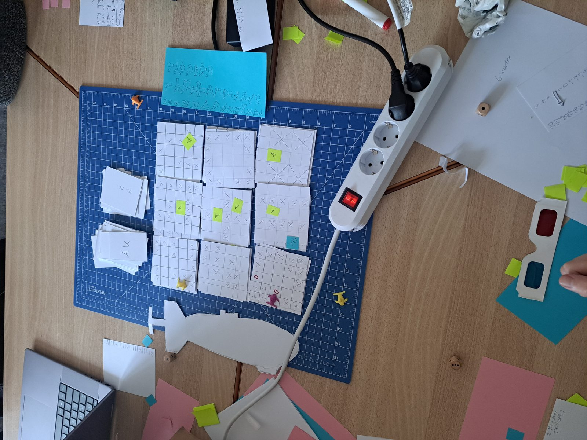

// 02 · Case Study
SeaTeam
Two players jointly pilot a submarine across the same physical board, but each sees a different truth on it — an analog cooperative game solvable only through communication.
- Team
- 4 people (3 teammates)
- Role
- Mechanics & Rules Design, Glasses Materials Production, Team Organization
- Timeframe
- 6 weeks
- Medium
- Analog tabletop game — no digital tools

Overview
Two players jointly pilot a submarine across the same physical game board, but each sees something different on it. Colored glasses reveal or hide different elements for each player, so that each only knows part of the truth about the map. Only through communication can the two players steer the submarine past obstacles and reach their shared goal: recovering artifacts.


Design Challenge
The actual mechanic isn't a rule in the traditional sense — it's a perceptual asymmetry, solved entirely through analog color-filter optics rather than software. The central design challenge was calibrating the information split so that neither player could act alone, yet both together would know enough to safely steer the submarine.
- Build genuine reliance between two players through partial information — not by removing a sense entirely, which an early "one blind, one sighted" concept tested and failed to do
- Keep both players looking at the same board while splitting what each one can see, so discovery and reliance survive together
- Tune the color palette so it hides each player's obstacles from the other while staying legible enough to read quickly under time pressure


My Contribution
As mechanics and rules designer, I helped take the project through several full pivots before it found its final form — from an early asynchronous, one-blind-one-sighted concept, through a card-based movement system, a 3D vertical grid that split the team and overloaded the game with stacked mechanics, and a physical shaking box chasing a haptic "wow" moment that drifted from the core idea. Inspired by Sky Team and Iron Lung, we reset around secret dice placement: three dice per player, rolled and placed without speaking, coordinating the submarine on a coordinate-based board rather than a rigid grid. I ran two structured playtests, added a "beacon" mechanic players asked for on their own, rewrote the rulebook down to about two and a half pages, and added a steady oxygen drain as a global timer once testing showed skilled players found the game too easy. I was also responsible for producing the special glasses materials and organizing the team.
Outcome & Learnings
By the final days the rulebook was locked, the physical tiles were finished, and the game was packaged in a wooden box — a working, tested, and genuinely asymmetric cooperative game. The tension comes from both players constantly having to verbally reconcile what they each see; the real game happens in the conversation between the two players, not on the board by itself. Getting the colors right was its own challenge on top of the structural pivots — the palette had to hide each player's obstacles convincingly while staying legible under time pressure.